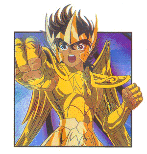

Forums galactiques > Assemblée Galactique : diplomatie officielle > Révèlation
Pages : 1 2
| Arioch Nemesis Respect diplomatique : 92  02/12 ETU 22:48 | Score : 7 Détails L'Assemblée était en ébullition suites aux actes d'Imothep.
Au milieu de ce chaos, un com-X vint s'afficher sur l'écran principal de l'antique hémicycle. Celui qui se faisait appeler Arioch Nemesis, le démon, apparut. Les yeux luisant d'une lueur malsaine, il s'exprima : ********************************************************************************************************************** Âmes faibles et ridicules, perdues dans le chaos sans nom creer par les commandants trop faibles pour réduire à néant les ordures qui les dérange. Je tiens à vous revèler ma véritable identitée. Pour des raisons totalements indépendante des faits de la galaxie - peut être etait ce la volonté divine, je ne saurais le dire - mes secrets ont été percés. Les envahisseurs Briochiens encerclait mon ridicule hôte. Ce vieillard sénile qui pensait tout pouvoir résoudre à la manière faible. Celui qui répondait au nom de Morcar Baughlir. Blessé à la poitrine, il n'avait plus que quelque minutes à vivre. Ce crétin perdait finalement sa force de volonté. Enfin, je pu m'extirpé de la prison de son esprit, et prendre le contrôle de son corp. Inutile de vous décrire ce qui arriva aux soldats, je peux simplement vous dire que les âmes des Briochiens sont très perturbées. L'abus de stimulo ne leur donne pas bon goût... Je suis Arioch Nemesis. Démon vengeur et dévoreur d'âmes. Je déroba un chasseur et m'enfuit en direction du premier point de saut. Dans ma violence aveugle, je m'en prit à un croiseur qui voulut m'intercepter. Je me rendit vite compte que le combat était perdu d'avance. J'enclencha dons les propulseurs hyperatomique de l'appareil, lesquels, endommager, me téléportèrent dans un système inconnu et vide. J'atterrie sur une planète, et pendant une longue semaine, me lança dans sa conquète. Relevant les mort que je faisais, les renvoyant à l'assault contre leurs anciens alliés, la chose fût vite faite. Aujourd'hui Nemegoth est une planète fantôme. Les âmes y sont exploitées afin de me fournir le pouvoir nécessaire au développement de mon pouvoir. Je tiens donc à signaler que le temps de ma vengeance est venu, même si celle-ci ne pourra pas être complète du fait de l'incident qui m'a dévoilé trop tôt. Que tout ceux qui m'ont fait un quelconque affront me fasse l'honneur de ne pas fuir. Ma tâche sera plus aisée. *********************************************************************************************************************** Dans un hurlement inhumain, le com-X prit fin. Beaucoup de commandants soupirèrent de soulagement : ils n'étaient pas visés. D'autre attendait de pied ferme se soit disant démons. Les derniers regrettaient déjà d'avoir pu causer du tord à la créature. | ||
| Archimage Antonophix Respect diplomatique : 10  03/12 ETU 09:38 | Score : 0 Détails Morcar,
Heu Arioch Nemesis, Ayez la franchise de signaler les commandants Visés, et surtout dois-je prendre vos attaques comme une déclaration de guerre? Au quel cas celle ci s'étendera a votre systéme antal, Vous avez encor le pouvoir de reculer. Cordialement, Antonophix | ||
| Arioch Nemesis Respect diplomatique : 92 03/12 ETU 10:20 | Score : -1 Détails Etant donner que vous donnez vraiment l'impression d'avoir perdu ce qui vous sert de système nerveux central, je vais essayer de vous reexpliquer tout cela très dou-ce-ment...
Morcar est MORT. Je suis le démon qui a été, il y longtemps, enfermé dans son âme. Le simple fait de m'avoir appelé Morcar mérite le traitement auquel vous avez droit. De plus, votre soutient direct face à un adveraire qui a préféré verser le premier sang plutot que de discuter d'un partage de planète justifie pleinement mes actes. La vengeance prime. | ||
| l\'abbé ramouflon Respect diplomatique : 579  03/12 ETU 12:40  | Score : -2 Détails que d'ultremisme ....
| ||
| Batracien Respect diplomatique : 8  03/12 ETU 12:49 | Score : 1 Détails Ooops désolé, erreur de topic.
| ||
| Archimage Antonophix Respect diplomatique : 10 03/12 ETU 15:01 | Score : 0 Détails Et avez vous une seul preuve de se que vous avancez?
| ||
| Arioch Nemesis Respect diplomatique : 92 03/12 ETU 15:13 | Score : 0 Détails Pour Seiya, c'est simple, Arietan possède la preuve.
Pour vous, c'est bien simple, apprenez à vous relire, vous m'avez bien appelé Morcar, je ne me trompe pas ? | ||
| Marx Respect diplomatique : -13  03/12 ETU 20:00 | Score : -3 Détails Morchior Naugmis ...
Je te vomirait dessus jusqu'à mon dernier souffle de vie . | ||
| Lyckar Respect diplomatique : 12  03/12 ETU 20:21 | Score : 2 Détails apprenez a ne pas trop déclarer ouvertement vos intentions belligérantes, Marx car ils se peut que d'anciennes alliances, jusqu'ici endormies refassent surface a votre plus grand malheur...
La faucille et le marteau sont des outils fragiles comparés au pouvoir d'une HA... renforcez votre kolkoze, petit communiste, c'est un conseil de la part d'un "ami"... | ||
| Marx Respect diplomatique : -13 03/12 ETU 20:26 | Score : 1 Détails De toute manière pas question de me défiler ... je ne me fait pas de soucis, vu sa puissance, il ne va pas combattre tout seul et ses fidèle on déjà mon nom en haut de leur liste ....
| ||
| Lyckar Respect diplomatique : 12 03/12 ETU 20:30 | Score : 2 Détails ne vous inquietez pas, petit communiste, je pense qu'Arioch n'a que faire d'une ame aussi faible que la votre...
par contre, je n'aime pas que l'on insulte ouvertement, alors retournez dans votre chaumiere, l'hiver risque d'etre froid, meme pour vous... en vous saluant... | ||
| Seiya Respect diplomatique : 5  03/12 ETU 20:45 | Score : 5 Détails je crois que vosu êtes complètement fou arioch, je vous ai répété je ne sais combien de fois que je n'ai pas voulu vous attaquer volontairement et vous le savez très bien, vous n'êtes donc qu'un truand et un vil menteur qui se sert d'une fausse preuve pour pouvoir mettre en pratique ses désirs ambitieux d'impérialisme...
alors n'inventez plus de faux prétextes et ayez le courage d'avouer vos intentions et non plus de vous cacher comme un lache derrière un faux prétexte et derrière ariétan | ||
| Arioch Nemesis Respect diplomatique : 92 03/12 ETU 21:04 | Score : 0 Détails Moi, je crois ce que je vois. Je n'ai plus le compte rendu, mais Arietan l'as. Tout ce que j'ai reçut en explication, c'est une menace de l'Archimage Antonophix me priant de vous donner certaines de mes planètes. Ce que j'aurais d'ailleur fait si vous aviez demandé avant de frapper.
Quand à Marx, son esprit est tellement en dehors de cette galaxie que je n'ai même pas envie de lui répondre... | ||
| Seiya Respect diplomatique : 5 03/12 ETU 21:06 | Score : 0 Détails vous croyez surtout ce qui vous arrange mon cher car en refusant de croire la vérité, cela vous permet de conquérir tout le système 399 pour vous tout seul.
Et de plus je vous ai récemment proposé une paix ou du moins des pourparlers mais vous avez refusé alors ne me dites pas que c'est vous la victime dans cette affaire | ||
| Arioch Nemesis Respect diplomatique : 92 03/12 ETU 21:07 | Score : 1 Détails Une demande de paix suivit par une attaque, heureusement louppée, de vos escadrons d'invasions.
Je ne suis pas comme mon hôte. Je ne pardonne pas. | ||
| Seiya Respect diplomatique : 5 03/12 ETU 21:08 | Score : 0 Détails l'attaque avait été programmée avant car elles mettent du temps pour arriver à leur terme
| ||
| Nenel Respect diplomatique : 211  03/12 ETU 21:15 | Score : 0 Détails Nous vous remercions Seiya pour cette grande nouvelle. Tout les commandants savent à présent qu'une attaque prend du temps. Nous vous décernons la médaille de la plus grande découverte.
Je demande également que vos problèmes de couples soient réglés ailleurs. Cela n'intéresse personne ici, et si ca intéresse quelqu'un, il pourra faire le conseiller conjugual en privé. Merci de votre compréhension. Nenel | ||
| Seiya Respect diplomatique : 5 03/12 ETU 21:16 | Score : 0 Détails très bien si vous voulez mais je tiens à vous signaler que c'est arioch qui a ouvert le débat ici, pas moi
| ||
| Arioch Nemesis Respect diplomatique : 92 03/12 ETU 21:27 | Score : 1 Détails Ha ?? J'ai lancé un débat moi ?
Je crois me rappeler (et oui, j'ai appris à lire et à écrire, aussi m'arrive-t-il de me servir de ces capacités remarquable) que j'ai lancer se sujet afin de me présenter... Pas vraiment afin de "débattre" sur ce sujet qui effectivement, n'interresse que vous... | ||
| Crimson Respect diplomatique : 18  03/12 ETU 21:40 | Score : 2 Détails Wow j'avais complètement oublié que Morcar avait un démon en lui! Content de vous rencontrer enfin!
À votre avis les âmes sont elles plus productives que les robots d'assemblage? Dans le cas d'une réponse affirmative voudriez vous en prêter une ou deux a mes scientifiques? Si vous ne voulez pas ca n'est pas grave. |
Pages : 1 2
Forums galactiques > Assemblée Galactique : diplomatie officielle > Révèlation